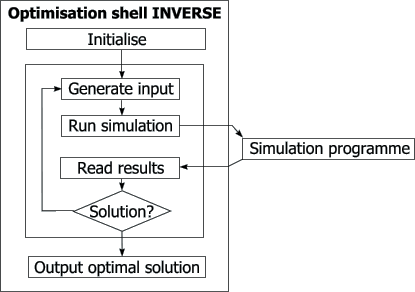

Visits since May 2000:
| |
Inverse je splošen program za reševanje inverznih in
optimizacijskih problemov s pomočjo simulacijskih okolij.Vsebuje nabor
optimizacijskih algoritmov in ostalih orodij, ki so dostopne preko
prilagodljivega vmesnika, katerega osnova je datotečnei interpreter.

|
| Users Board | Illustrative examples |
| Dopolnjeno v novembru 2004. |
Visits since May 2000: